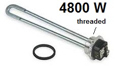

It is also worth noting, that without the
storage tank, every cycle of the heatpump system begins with the radiator water having cooled
down below room temperature (68F). So the first majority of each cycle is actually operating in the more efficient
upper left portion of the red curve.
Poor response time - Only when doing big thermostat set-backs, and no worse than with oil.
Baseboard Hot Water Heating Systems: I finally realized that the contractors did not differentiate
between my 90 year old radiator system (with a ton of cast iron and over 180 gallons of water)
and more recent circulating hot waterr baseboard system which of course
require a TANK system since they have so littler thermal mass. In that case a tank is reuired
for all the reasons they state. But not for my goals of efficiency and my old radiator system.
Tankless Install: Other thermal and mechanical engineers where I work (though, not
specifically HVAC engineers), all agreed that operating at lower
temperatures as a matter of routine would be more efficient so I finally found a
contractor
that would install the system without the storage tank and would install the added temperature,
pressure, and flow gages that I requested. Though, he put a clause in the contract that
without a "storage tank, performance was not guarnateed". Besides, his price was also
the best price. Oh, and the other contending contractor lost the job when he said something like
"my father has been doing these for 30 years and that is just the way we do it"... implying to
me that no one was really engineering these systems, just turning the replicating crank.
Trenches: The photo at right is the 4' deep trench with the header piping
to connect three of the four 300' wells. The 3rd well is 20' around the far corner to the right. The 4th
is near the buldozer in the photo farther down the page.
Primary Mode - Gotcha! Once the system was installed,
it was immediately obvious why they claimed that a storage tank was "required".
And that is because the default control system only does one thing. Drive the HP compressor until the return
circulating water reaches the 120F setpoint (tank set point) completely independent of the house
thermostat. So the house just kept rising in temperature until every radiator in the hosuse was at
the "tank's 120F set point" even though there was no tank. This is called "Primary mode"
and not designed for a tankless system.
Secondary Mode: Next we tried
secondary mode, where the HP would respond to an external thermostat (in the house). This worked great
except now, it ignored the maximum water "set point" which is usually an Aquastat measuring the circulating
water temperature. This is not really a problem except in the
case of deep temperature set-backs. If we set back the heat by 5 degrees, then when the timer
later bumped it up by 5 degrees, the HP would run max out until the house was satisfied, and this could
let the heat pump go all the way to its maximum output even if it was not needed.
Engineered-Fix: To keep system water temperature low and to maximize thermal transfer to the'
rooms, we decided to blow air across the radiators!
We just placed some of our summer fans directed at some of the
radiators in the house. Now not only does the house warm up faster, but
the circulating water never gets close to the maximum of the heatpump and so all of our heat is now
coming at a much lower temperature. Note, I only placed fans where aesthetically acceptible to the wife,
as shown here in the dining room (with outdoor plants in for the winter),
but it turns out that with fans conveniently on 6 out of about 15 radiators, the house temeprature is fine.
We now set at 68F and are enjoying winter life, where with Oil, we only set to 65F for guests and
shivered around 62F the rest of the time.
Fans for convection: The fans aren't all new to us.
We had already grown accustomed to placing a box fan in front of a radiator
in a room where we were going to be for a while to improve convection there while keeping the rest of
the house more economical. It also has the advantage of not having to go open and close rusted radiator valves
throughout the house to move heat around. Its like a zone heating system on every room with a fan.
See our other fans in the
living room,
playroom,
game room, and
kitchen.
The kitchen has our only baseboard heater and so I built a small box with some box fans in it
as shown here flipped over. The two box fans are wired
in series to make them very quiet and the box makes a nice sleeping platform for the fat cat that
then overlaps onto the narrow baseboard. Though this arrangement only blows air under about 1/4th
of the baseboard and is still inadequate to fully heat the kitchen without an aux electric baseboard heater.
I have added a "tower" fan as well, but it is too noisy even on low and we both dont like the
looks, so it goes away before guests.
Shopping around for $5 fans at the flea-market found enough fans that we could select the most quiet ones
and chuck the noisy ones. I also ran a circuit around the house with small outlets by each of these radiators
driven from the heat-pumps load circulating pump circuit. This turns the fans on and off with the heat and
also makes it easy to connect the fans once a year between seasons.

Emergency Backup Heating: To provide emergency heat during power outages or in case the HP needed
work, I installed a pair of 4800 W electric water heater elements inside a 3' piece of 2" galvenized pipe
as shown at right This 9600 W
worth of heat can provide about 33,000 Btu but at a cost of about $1.50 an hour or about $30 a day
for 20 hours run time on very cold days. Surprising, straight resistive electric heat (at 10c/kWh)
is no more expensive than heating oil when oil is at $3.50 a gallon or higher.
Caution: There must be circulation! If the circulator pump
would fail, the water will boil and over presurize the system.
Presumably the relief value would blow and the
heating elements would then self distruct (though contained safely within the pipe).
So I will use a surface contact
over-temp thermal cutout to sense any abnormal heat rise. When it steams, the 3" pipe heats up to boiling
almost instantly from its normal 95 F to 100F normal operation.
 PRIUS Emergency Power idea: The plan is to use my
Prius for Emergency power to power these heater elements.
The beauty is that
these two 4800 W elements can be connected directly to run at 240 VDC from the Prius High Voltage
system. My car has outlets on the back for access to both 10 kW of 240 VDC power and about 1 kW of
120 VAC. The car should be able to provide the 10 kW from its 18 kW MG1, but the
challenge is to make sure the engine stays running.
Normally the Prius will start and stop the engine as needed to keep the HV battery charged, but at this
10kW load, I don't want the engine to be starting and stopping every fraction of a minute. I need to
find the right load so that it runs all the time (this has not yet been tested). Bob Wilson suggest spoofing
the engine thermostat to make it appear cooler than 40C and the engine will automatically run to
maintain engine temp (to keep emissions low).
PRIUS Emergency Power idea: The plan is to use my
Prius for Emergency power to power these heater elements.
The beauty is that
these two 4800 W elements can be connected directly to run at 240 VDC from the Prius High Voltage
system. My car has outlets on the back for access to both 10 kW of 240 VDC power and about 1 kW of
120 VAC. The car should be able to provide the 10 kW from its 18 kW MG1, but the
challenge is to make sure the engine stays running.
Normally the Prius will start and stop the engine as needed to keep the HV battery charged, but at this
10kW load, I don't want the engine to be starting and stopping every fraction of a minute. I need to
find the right load so that it runs all the time (this has not yet been tested). Bob Wilson suggest spoofing
the engine thermostat to make it appear cooler than 40C and the engine will automatically run to
maintain engine temp (to keep emissions low).
Solar Emergency Power: Although my
grid-tied solar also ceases operation when the grid
goes down, I still have about 8 kW of solar DC power
available. The system consits of three arrays of panels providing about 2.8 kW each at 480 volts to three
separate grid-tie inverters. During power outages, I can simply parallel the 480v outputs of
all three arrays and connect this to the two 4800W heating elements in series to provide a nice
matched load. Caution: All high voltage DC wiring inside a dwelling must be in metalic conduit
since a slight bad connection becomes a 3000 degree welding arc and is not self-quenching like AC.
Conclusion and Phase-2:
So with the solar during the day, and the Prius at night, we can at least get
33,000 Btu of heating during power outages. Phase 2 of the system would find a way to take
all the waste heat of the Prius gas engine and get that inside the house. That would double
the heating capacity! Call it co-generation.
Geothermal Installation Impact: For us, the installation impact was enormous! The reason being, that
the only place we could get the Well drilling truck was in our front yard, and our front yard was 100%
driveway, plantings, or gardens. The
drilling truck
was 30 feet long and needed at least 13 feet of overhead
clearence just to get in, and then needed 33' of clear sky vertical clearance over the wells. This
involved supstantial tree trimming as well. The photo here shows the impact on our driveway
after the well drilling rig has left and then the connecting trenches were dug. The
entire 3400 sqft concrete circular driveway had to be dug up and hauled away to clear room
for all th is work.
Discounted Brick Paving: But since the entire front yard driveway had to be dug up for this
project then restoring the driveway was all part of the overall project bill and that was
covered by the 30% renewable energy tax credit. So that was a significant discount for
what turned out to be a very nice looking driveway.

THE REMAINDER OF THIS PAGE HAS NOT BEEN EDITED YET AND IS A CARRY OVER FROM OTHER PAGES
Other Related Pages:


{kind=link}
{kind=link}
{kind=link}
{kind=link}
{kind=link}
{kind=link}
{kind=link}
{kind=link}